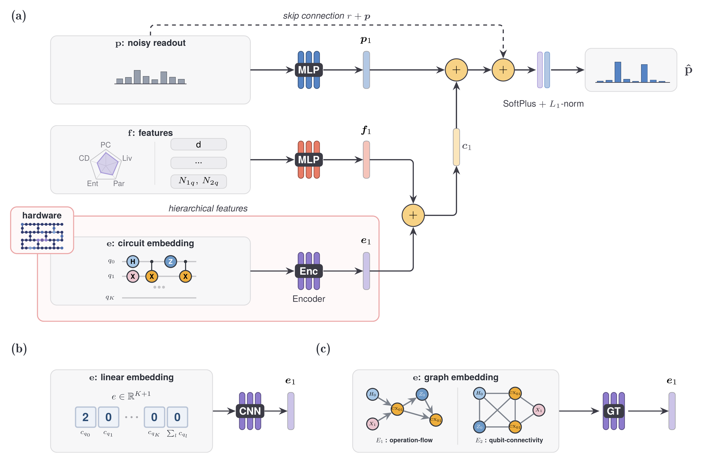
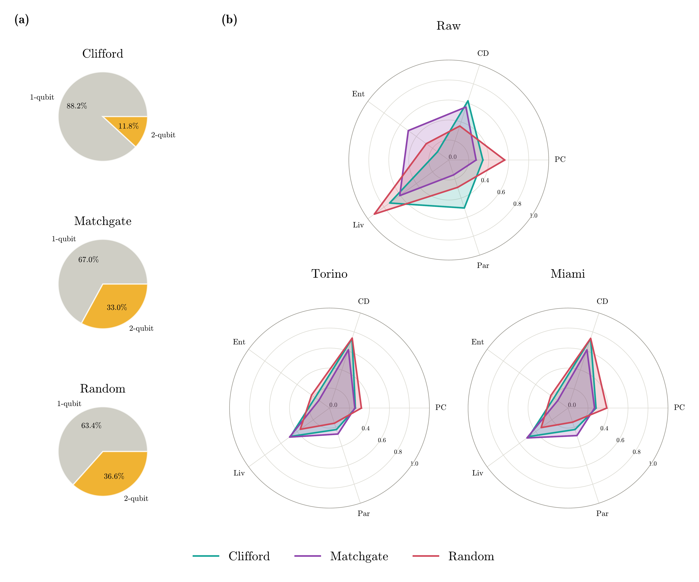
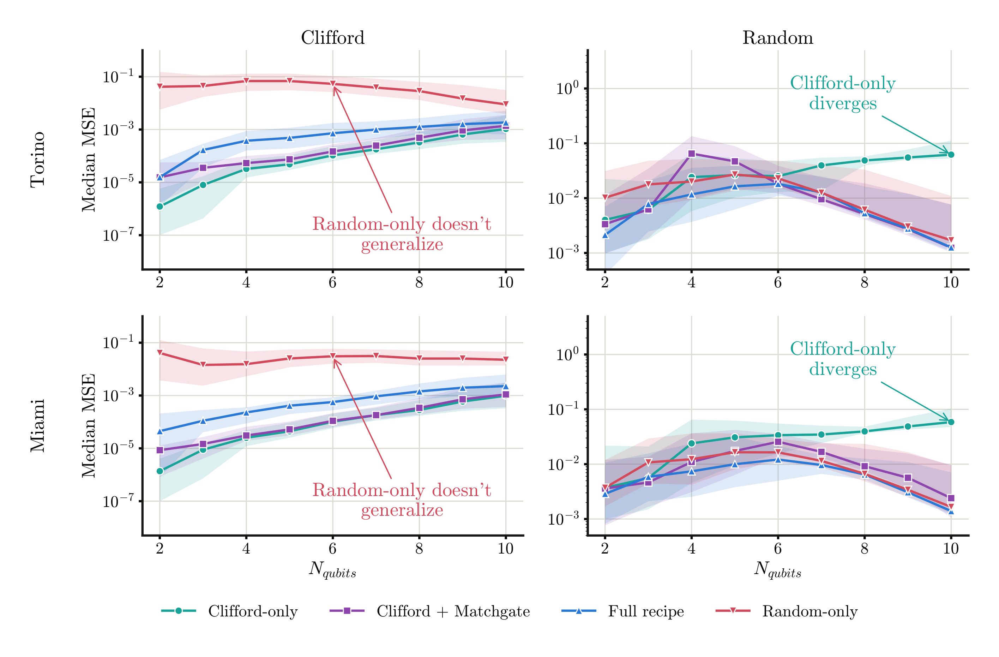
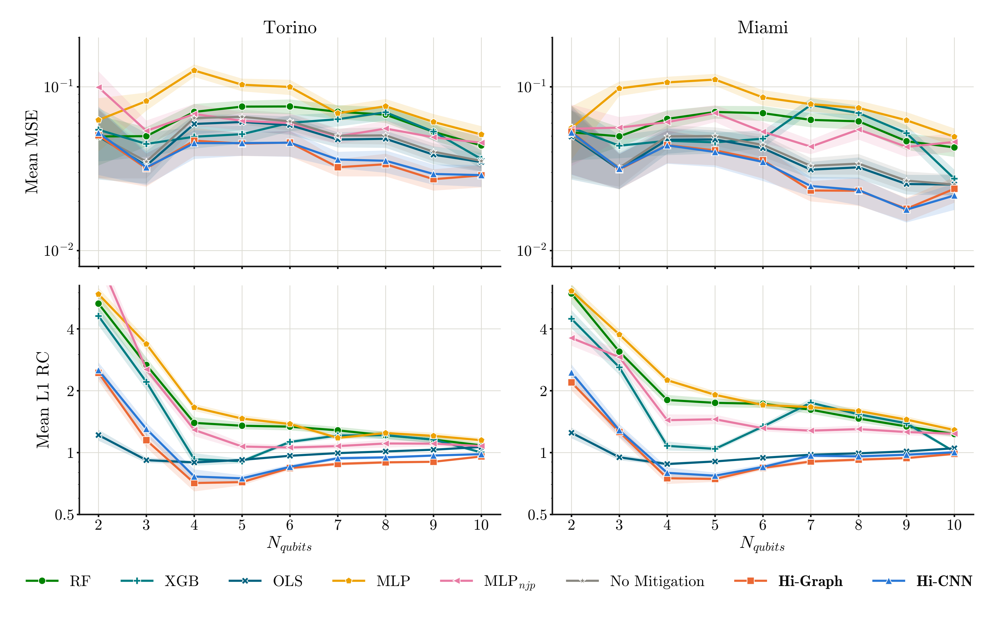
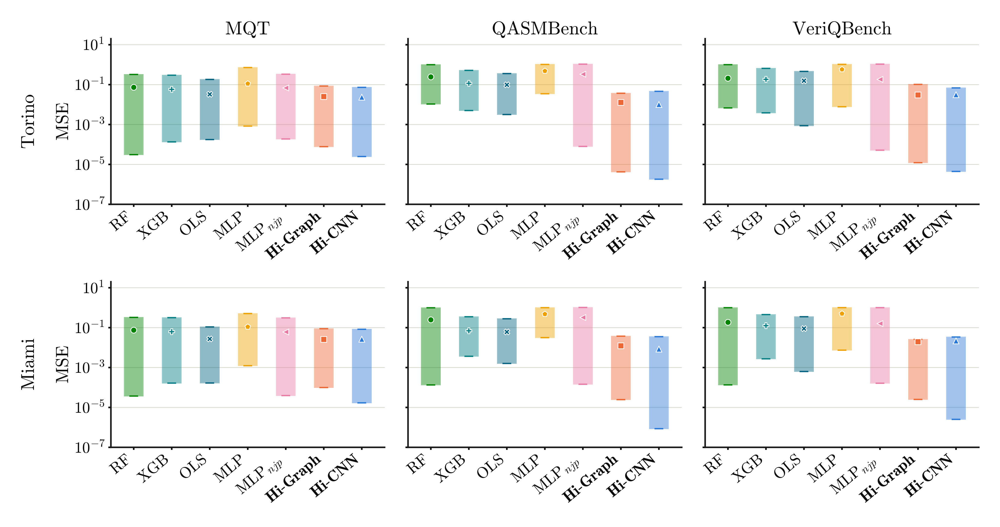
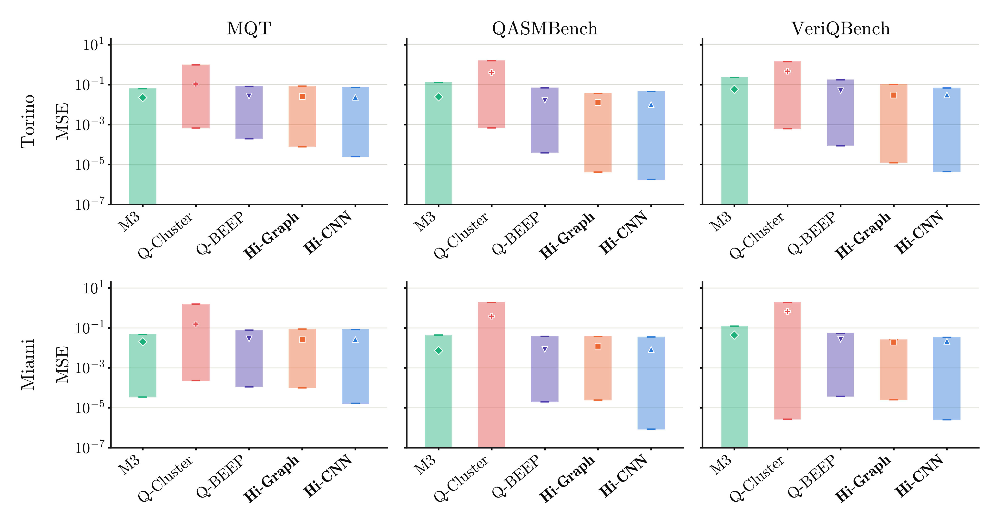
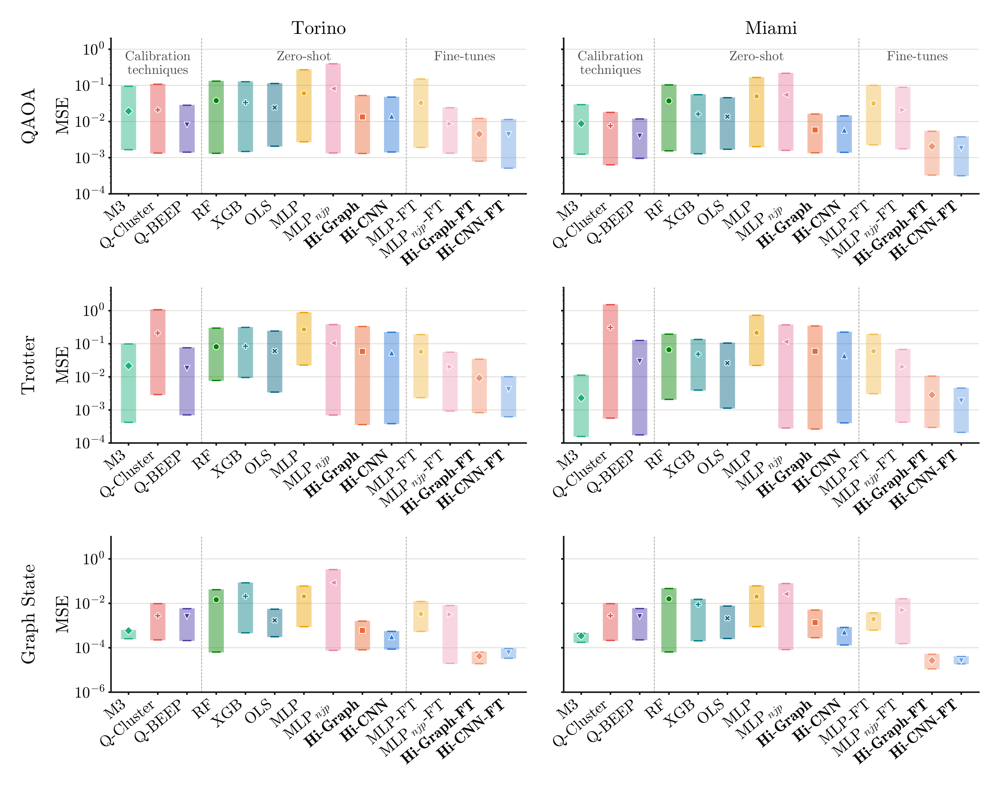
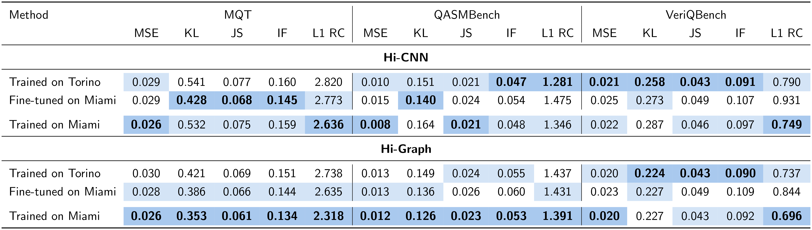
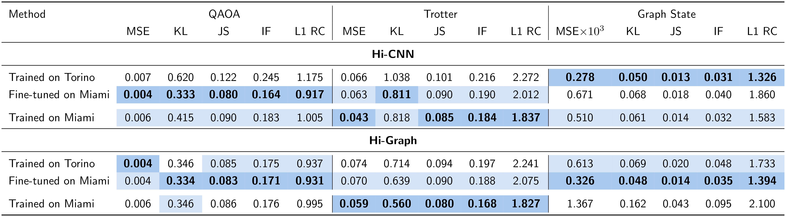

Noise remains the main obstacle to useful computation on current quantum processors. Quantum error mitigation (QEM) methods that post-process measured output distributions typically rely on calibration data or simplified noise models, while learning-based approaches can infer hardware-specific noise directly from data but are usually trained for a single register size and evaluated on the circuit families seen in training.
We introduce Hi-QEM, a device-conditioned deep learning framework for QEM of full output distributions at readout. Its hierarchical models, Hi-CNN and Hi-Graph, combine the noisy distribution with hand-crafted circuit and device features and a structural embedding of the transpiled circuit, so that a single model per device mitigates circuits of 2 to 10 qubits. The models are trained on a mixture in which 90% of the circuits are classically simulable Clifford and Matchgate circuits.
In noisy simulations of IBM Torino and IBM Miami, they achieve the lowest MSE among learning-based methods in zero-shot evaluation on MQT Bench, QASMBench and VeriQBench, up to 10× below the strongest baseline, and attain the lowest or tied MSE against calibration-based methods, in four of six settings, without calibration data at inference. After lightweight fine-tuning, they match or surpass the best calibration-based method on QAOA, Trotterized Ising, and Graph State circuits. Models trained on Torino also transfer zero-shot to Miami, a device with a different coupling map, staying within about 25% of natively trained models outside Trotterized circuits. We publicly release the benchmark, including circuits, noisy and ideal distributions, and generation code.
Hi-CNN and Hi-Graph mitigate circuits of 2 to 10 qubits with a single model per device, without calibration data or extra circuit executions at inference.
We train on Clifford and Matchgate circuits with a small share of Random circuits. This mixture generalizes better than training on any single family, and 90% of it is classically simulable.
We evaluate zero-shot on MQT Bench, QASMBench and VeriQBench, zero-shot and with fine-tuning on QAOA, Trotterized Ising and Graph State, and test transfer from IBM Torino to IBM Miami, a device with a different coupling map.
We release the circuits with their ideal and noisy output distributions for both devices, their features, and the generation code publicly on Hugging Face.

We formulate readout error mitigation as a multi-dimensional regression problem: given the noisy output distribution of a circuit, the model predicts its ideal distribution. Besides the noisy distribution, our models receive hand-crafted features of the logical and transpiled circuit (depth, gate counts and SupermarQ features) and a structural embedding of the transpiled circuit on the target device. Our two implementations of the Hi-QEM framework, Hi-CNN and Hi-Graph, therefore differ only in how they process this embedding. Hi-CNN uses a linear embedding, which counts the two-qubit interactions on the most used device wires, and processes it with a 1D-CNN. Hi-Graph represents the circuit with two graphs over its operations, the operation flow and the qubit connectivity, and processes them with a graph transformer that learns how much to rely on each graph.
For each device, we train one model on circuits of 2 to 10 qubits together. This single model performs on par with nine separate per-qubit models.
Our training set contains 54,000 circuits of 2 to 10 qubits: 32,400 Clifford, 16,200 Matchgate and 5,400 Random circuits. Since Clifford and Matchgate circuits are efficiently simulable, the ideal distributions for 90% of the training circuits can be computed at a low classical cost. The circuit complexity (number of gates, number of operations or depth, depending on the family) grows linearly with the number of qubits.

For every circuit, we store the logical and transpiled QASM2.0 code, plain and SupermarQ features of both versions, the ideal distribution from a state-vector simulation, and the noisy distribution from 5,000 shots on the noisy simulation of each device.
All evaluation circuits are unseen in training: we perform (i) zero-shot benchmarks of MQT, QASMBench and VeriQBench circuits from 2 to 10 qubits and (ii) fine-tuning evaluation on QAOA, Trotter and Graph State structured downstream tasks (4, 6, 8 and 10 qubits).
We present our results on noisy simulations of two IBM backends, Torino and Miami. In our analysis, we include MSE against the ideal distribution (following the regression formulation), probabilistic metrics (i.e., KL- and JS-divergences, Infidelity) and L1 relative change (L1 RC), where L1 RC < 1 means that mitigation actually helped over the noisy output (in terms of L1 distance).
Does adding classically simulable circuits to a small set of Random circuits improve generalization?

One Hi-CNN or Hi-Graph model per device against baselines fitted separately for each Nqubits, on synthetic Random circuits.



Zero-shot and fine-tuning generalization evaluation against both learning- and calibration-based methods.

Benchmark suites: MQT, QASMBench, VeriQBench.


@article{anoshin2026hiqem,
title = {Hi-QEM: Hierarchical Models and Benchmark for Learning-based
Quantum Error Mitigation at Readout},
author = {Anoshin, Matvei and Lizzio Bosco, Daniele and Serra, Giuseppe},
journal = {arXiv preprint},
year = {2026},
note = {arXiv identifier pending}
}